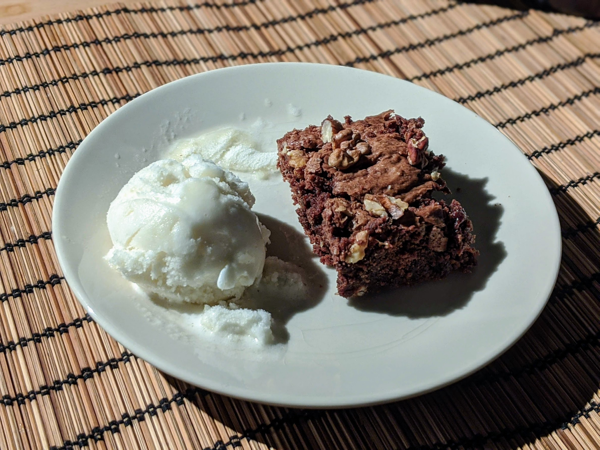

..@..♦.D.

|
Présentation 
|
Blog
|
Recettes
|

Ici avec une boule de [sorbet au citron](CitronsGivres.html)
Pour 4 personnes (large) :
Remarque : Ne pas hésiter à le sortir "trop tôt" du four, il durcit en refroidissant (owi).
Variante : Vu que c'est quand même un dessert de gros sac (vise un peu la quantité de sucre), ça passe bien avec une boule de glace à la vanille.
Variante 2 : Pour faire une jolie déco, on peut préparer un peu plus de noix et les mettre sur le dessus du gâteau juste avant d'enfourner.